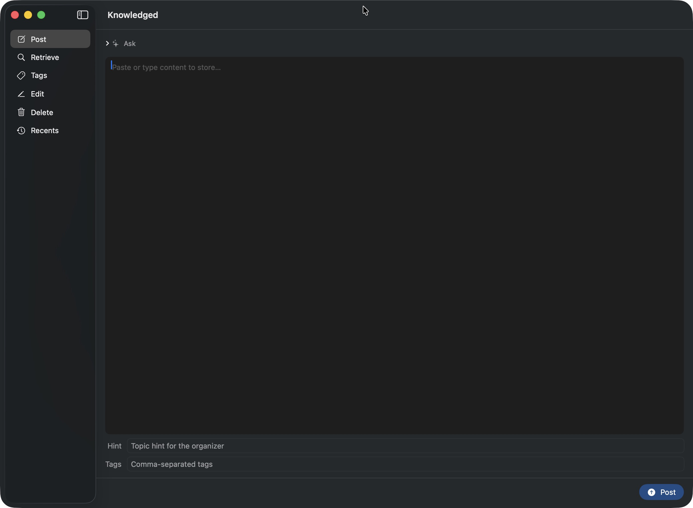
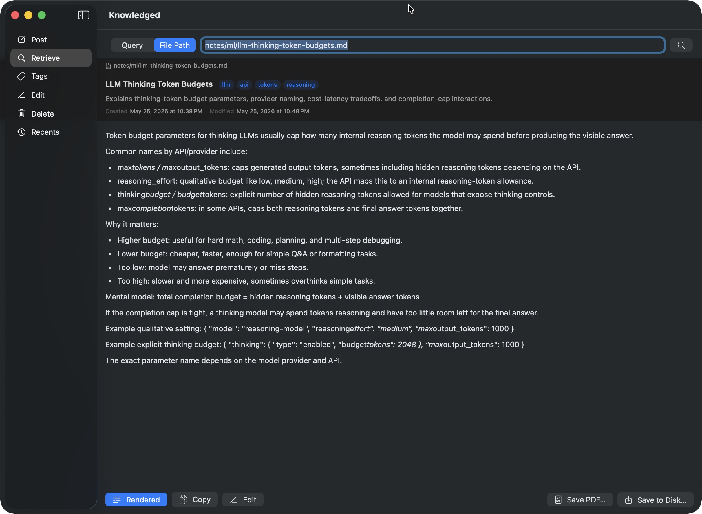
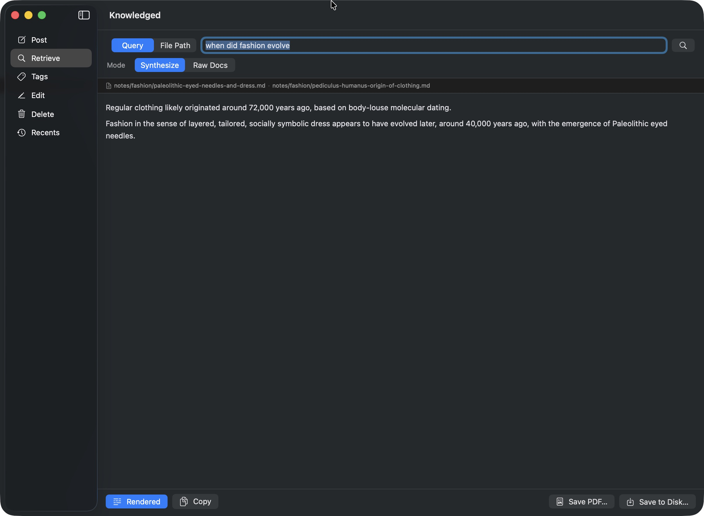
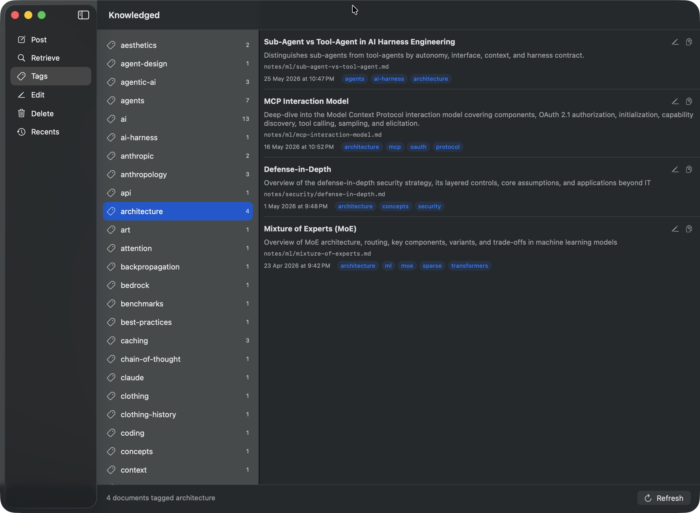
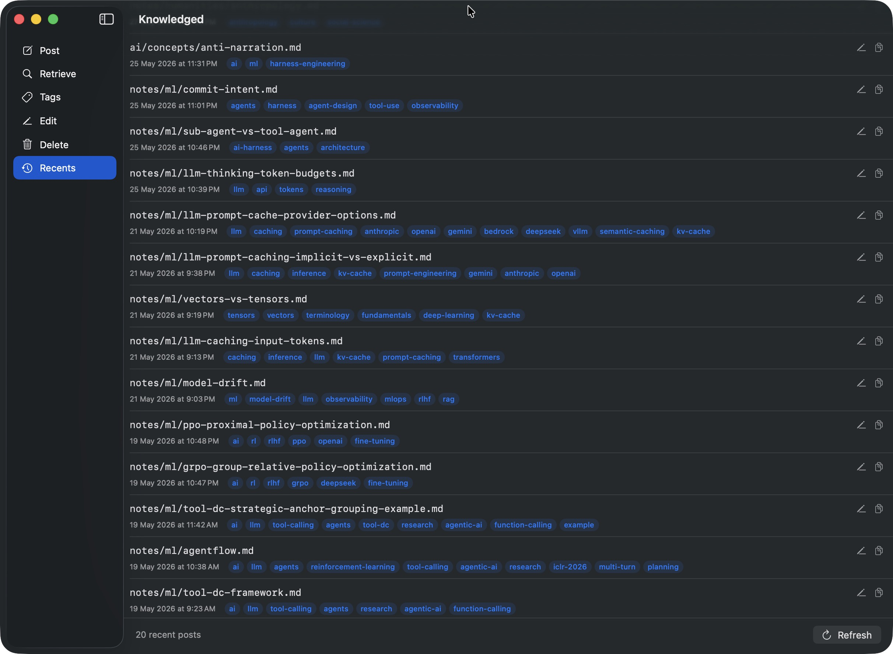

📂
LLM picks the path
On every write, the model reads INDEX.md, decides where the note belongs, and refactors the tree if it has drifted. You stop foldering by hand.
Write notes in; an LLM decides where they belong, keeps the folder structure tidy, and commits everything to Git. Query content back as raw Markdown or synthesized answers — from the CLI, HTTP, or a native macOS app.
A small set of strong defaults that turn a folder of notes into a queryable, audit-friendly knowledge base.
On every write, the model reads INDEX.md, decides where the note belongs, and refactors the tree if it has drifted. You stop foldering by hand.
Every write is one atomic commit with the job ID in the message. Crash recovery scans the log — jobs never run twice.
Query by natural language and get an answer with sources cited, or pull the raw Markdown back. By file path, query, or tag.
Ollama, Anthropic, OpenAI (incl. Azure / OpenAI-compatible gateways), and Jan — one llm.Provider interface, four backends, zero lock-in.
HTTP server, kc CLI, and a native SwiftUI macOS app. Pick the one that fits the moment — they all talk to the same backend.
A single Go binary, a JSON queue file, and go-git. No database to babysit, no vector store to tune.
knowledged-mac is a native SwiftUI client. Post, retrieve, browse tags, edit, and replay recents — all without leaving the window.





Paste content, optionally add hint and tags, then use the Title field below Tags only when you want to override the generated title.
Pull any stored file back with frontmatter, tag chips, and inline rendering.
Ask a question in plain English; the model drafts an answer and cites the source files it used.
Tags are derived from frontmatter and cached. Click a tag to see every note that carries it.
Twenty most recent posts, one click away from re-opening, editing, or jumping to a tag.
Two steps: run the backend, then talk to it from kc, HTTP, or the Mac app.
brew install wiztools/repo/knowledgedollama pull mistral-small3.1
./knowledged \
--repo /path/to/knowledge-repo \
--llm-provider ollama \
--model mistral-small3.1 \
--port 9090export ANTHROPIC_API_KEY=sk-ant-...
./knowledged \
--repo /path/to/knowledge-repo \
--llm-provider anthropic \
--model claude-sonnet-4-6 \
--port 9090export OPENAI_API_KEY=sk-...
./knowledged \
--repo /path/to/knowledge-repo \
--llm-provider openai \
--model gpt-5.5 \
--port 9090
# Azure / OpenAI-compatible gateway:
./knowledged --llm-provider openai --openai-url https://your-gateway/v1 …./knowledged \
--repo /path/to/knowledge-repo \
--llm-provider jan \
--jan-url http://localhost:8080 \
--port 9090kc post --content "Goroutines are…" --hint golang --title "Go Goroutines"
kc get --query "how does Go handle concurrency?"
kc get --path tech/go/goroutines.md
kc tags
kc ask --question "what is RAII?"git clone https://github.com/wiztools/knowledged-mac.git
cd knowledged-mac
./bld.sh # builds Release and copies to /ApplicationsOpen Settings (⌘,), point at http://localhost:9090, click Test.
A single Go binary fronts an HTTP API. Writes funnel through one worker goroutine; reads hit the filesystem directly. Git is the durable store.
POST /content validates, appends a job to .knowledged/queue.json (atomic rename), returns 202.queued job and flips it to processing on disk before any work begins.INDEX.md, content, and any user metadata. User-supplied title/tags are preserved; missing title/tags are generated in the strict-JSON placement decision.store(<jobID>): path.GET /content?path=… — direct file read, no LLM.GET /search?query=… — LLM picks ≤5 relevant paths from INDEX.md, server reads them; returns raw documents.GET /search?tag=… / ?tags=a,b&match=all — derived from a cached tag index rebuilt from frontmatter on staleness; metadata by default, bodies with &mode=raw.GET /answer?query=… — same relevance call as /search, then a synthesis call that answers from those files only.On startup the queue scans queue.json. processing jobs are resolved against git log: if a commit contains the job ID, the job is marked done; otherwise it is reset to queued and retried. Commits are atomic — exact-once semantics fall out of git.
<repo>/
├── .gitignore # ignores /.knowledged/
├── .knowledged/
│ ├── queue.json # live job queue
│ └── origin-push.json
├── INDEX.md # auto-maintained
└── <topic>/<sub>/<file>.mdHTTP GET handlers read the filesystem directly with no locking. POST handlers acquire the queue mutex only to persist the job and signal the worker. The worker goroutine is the single writer of git — no concurrent git writes are possible by construction.
type Provider interface {
Complete(ctx, system, user, opts…) (string, error)
CompleteStructured(ctx, system, user, schema, opts…) (string, error)
}One method per provider. The only call option today is WithReasoningBudget(n), forwarded to POST /ask when a non-zero --ask-reasoning-budget is set.
Full reference lives in the repo README — here is the shape of it.
/content
Enqueue a write with content, optional hint, title, and tags. Empty title/tags are generated by the LLM organizer.
/content
Replace an existing document's body, title, description, or tags by path.
/content
Remove a stored document by path; commit is atomic.
/content?path=…
Fetch a single document by repo-relative path.
/search?query=… | tag=…
LLM-ranked retrieval by query, or tag-index lookup. Always returns an array.
/answer?query=…
LLM-synthesized answer with cited sources, drawn from the most relevant documents.
/jobs/{id}
Poll job status: queued · processing · done · failed.
/posts/recents
Up to 20 most recent posts with tags hydrated from frontmatter.
/tags
Tag inventory derived from note frontmatter.
/ask
Draft a Markdown answer + suggested tags. Stores nothing.
Pick a provider, point --repo at a folder, and start posting.